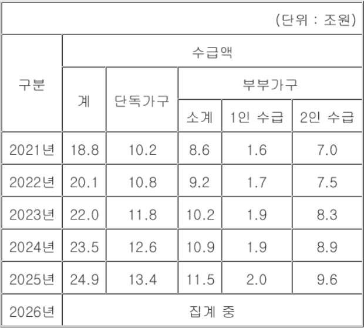

9/9(수) · 기준 2026-09-08 22:00 ~ 2026-09-09 06:00
엑셀 다운로드
"이미지 다운로드"를 누르거나, 이미지를 길게 눌러 저장한 뒤 카톡으로 보내세요.

![신혼부부 몰린 공공주택…SH, 중산층 주거안전망 넓힌다[집슐랭]](images/infographics/article_07_4.png)

![[연합뉴스] OECD 국제학업성취도평가(PISA) 결과](images/graphics/연합뉴스_01.jpg)
![[뉴시스] 올해 수능 N수생 23년 만에 최대… 재학생은 감소](images/graphics/뉴시스_02.jpg)
![[뉴시스] 주담대 연체 2.2조원…3년 반 만에 2.2배 급증](images/graphics/뉴시스_03.jpg)
![[뉴스1] [오늘의증시] 9월 8일 코스피 코스닥](images/graphics/뉴스1_04.jpg)
![[뉴스1] [오늘의 그래픽] 국민연금 '죄악주' 투자 8조원 넘었다…3년 새 45% 증가](images/graphics/뉴스1_05.jpg)
![[뉴스1] [그래픽] 건강보험 보장 1단계 혁신방안-치과](images/graphics/뉴스1_06.jpg)
![[뉴스1] [그래픽] '국민건강보험법 시행령' 주요 개정사항](images/graphics/뉴스1_07.jpg)
![[뉴스1] [그래픽] 건강보험 보장 1단계 혁신방안](images/graphics/뉴스1_08.jpg)
![[뉴스1] [그래픽] 연도별 건강보험료율 현황](images/graphics/뉴스1_09.jpg)
![[뉴스1] [그래픽] GDP·GNI 추이](images/graphics/뉴스1_10.jpg)

![[속보] 정점식 “이번 정부서 개헌 없다……李 대통령 재판 즉각 재개하라”](images/article_02.png)


![신혼부부 몰린 공공주택…SH, 중산층 주거안전망 넓힌다[집슐랭]](images/article_07.png)

![[속보]美증시, 유가 급등에 하락…다우 1.18%↓](images/article_09.png)


![[속보] 내년 건보료율 안 오른다… 지지율 하락에 재정위기 외면](images/article_14.png)


{kind=link}
{kind=link}